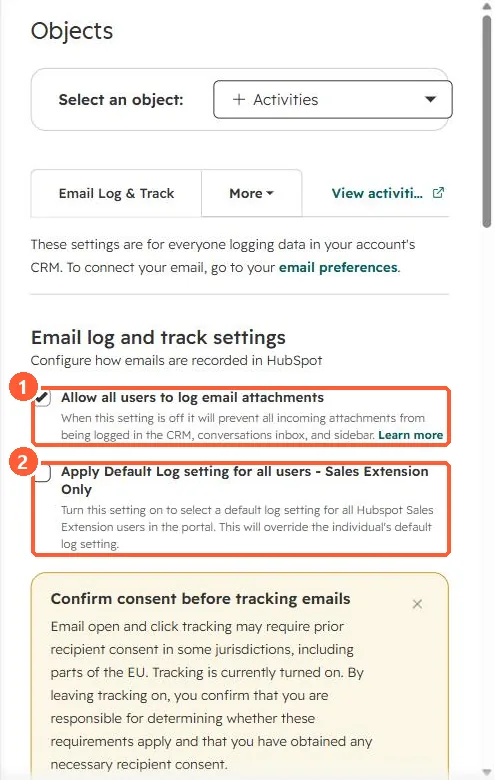

Short answer
Each user sets log and track preferences for their own Gmail inbox from the extension's Log and track settings. A Super Admin can set a default for all extension users, and that account-wide setting overrides the individual one. Use the never log list to stop specific addresses or domains from being logged.
1. Set your log and track defaults
- In Gmail, click the sprocket icon at the top of your inbox and select Log and track settings.
- Turn on Log email to log every email by default.
- Turn on Track email to track every email by default.
These apply each time you compose a new email in your inbox.
2. Set default associations
In the Default Email Associations section of the same panel:
- Create new contacts creates a contact when you log an email to an address that is not in your CRM yet.
- Hide suggested associations shows only the record types set in your account's default association settings when you log an email.
To review the account's default association settings, click Manage Other Default Associations. HubSpot opens the activity settings for you.
3. Block addresses and domains
In the Never log field, enter an email address or domain and click Add. If your user has Account Access permissions, choose Block for all users or Block only for me. Blocked emails do not log to the CRM or appear on the recording timeline. To unblock one, hover over it and click the delete icon.
4. Account defaults set by a Super Admin
A Super Admin sets defaults for everyone in the account, in the activity settings under Objects, on the Email Log & Track tab. The screenshot shows the two settings that affect the extension. The first lets all users log email attachments. The second applies one default log setting to all extension users, and it overrides each user's own default.


5. Keep the toolbar focused
In the Gmail compose window, click More, then Configure. Click Add Tools to select the tools you use. Drag them into order, or click the delete icon to hide one. Changes save automatically.
Related
Account extension settings and troubleshooting.